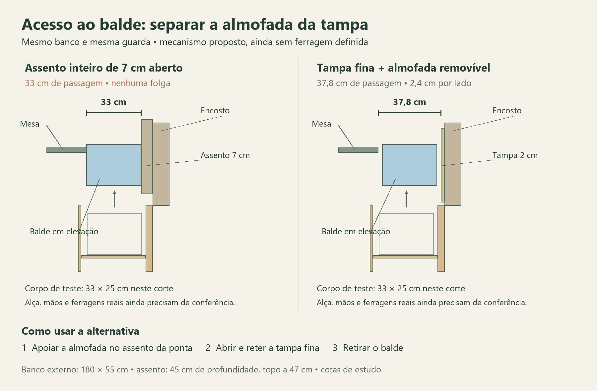

Guedala Park · 08/10/2026 · organização aprovada
Um lugar para cada grupo,
com mais espaço para construir o banco.
O banco continua com 180 × 55 cm externos, assento de 45 cm de profundidade e topo a 47 cm. Ver continuação técnica: correção das dimensões externas, tampas e apoios. O redesenho ocupa o mesmo trecho anterior à folha da mesa; muda divisórias e baixa apenas o fundo do setor dos potes em 2 cm.
Organização funcional aprovada por Elias em 08/10/2026: “ok, aprovado”. Os destinos e a distribuição apresentados passam a orientar o detalhamento; as cotas continuam sendo de estudo. As escolhas de capacidade ficam preservadas. A solução depende de a estrutura permitir o novo fundo, os apoios e as tampas; esses componentes ainda não foram dimensionados para fabricação.
O que você definiu hoje
A térmica de 1,5 L será guardada vazia e seca após o uso. Batatas, cebolas e alho serão poucas unidades; não foi atribuído um número ou peso a essa resposta.
Banco: três seções antes da folha
Da ponta junto ao sofá para a cozinha: 36,2 cm para potes/travessas/batedeira, divisória de 1,8; 35 cm para liquidificador e bebidas, divisória de 1,8; 19,8 cm para o balde. Total interno: 94,6 cm. O início do nicho da folha permanece em 98,2 cm desde a ponta externa.
Planta do nível inferior. No setor central, a jarra de bebidas fica atrás da térmica; o liquidificador desmontado ocupa a faixa ao lado. A jarra/tampa/lâminas e o motor/cabo continuam em seus próprios envelopes de 18 × 18 cm. Não se usa outra gaveta para esconder acessórios.
Limpeza com acesso próprio: prever divisória contínua até o fechamento, tampas independentes para as seções limpa e do balde e contenção removível no fundo do setor do balde. O ensaio reserva 18 × 35 × 3,3 cm externos para essa contenção; paredes de 4 mm e fundo de 3 mm são hipóteses geométricas, sem escolha de material ou comprovação de estanqueidade. A divisória de 18 mm não é, por si, certificação de higiene.
O aspirador e os jogos mantêm os dois vãos de estudo sob a folha, cada um limitado a 37,1 × 35 × 16,4 cm de conteúdo. São hipóteses de fabricação: os jogos reais não foram reduzidos a duas caixas e a estrutura não foi dada como resolvida. Folha e nicho 80 × 35 × 7 preservados.
Seis vidros acima das travessas e da batedeira
Três pilhas de dois potes completos. A referência dimensional continua 19 × 14,5 × 4,7 cm por pote de aproximadamente 800 ml, baseada nos documentos locais de 06/10. O modelo comercial não está escolhido.
| Conferência | Novo cenário |
|---|---|
| Fundo interno do setor | 8 cm do piso, antes 10 |
| Altura útil até a cota 40 | 32 cm, antes 30 |
| Reserva acima da batedeira | 3,5 cm preservados |
| Montagem completa dos apoios | 24 mm testados; teto aritmético 29 mm |
| Reserva acima dos potes | 4 cm: 3,5 exigidos + 5 mm extras |
Não se baixou a prateleira sobre a batedeira consumindo sua folga. O ganho vem do fundo do compartimento, que é uma nova hipótese construtiva. Com um fundo hipotético de 18 mm, sua face inferior ficaria a 6,2 cm do piso. Rodapé, apoios, carga do banco e fechamento devem demonstrar essa viabilidade.
Envoltórias iniciais dos dois apoios: posterior 36,2 × 20,5 e frontal 36,2 × 18 cm. O detalhe abaixo introduz folgas de montagem: painéis de estudo 35,6 × 20,2 e 35,6 × 17,7 cm, com a mesma altura de apoio e junta de 5 mm. O envelope de 24 mm inclui painel, perfis, apoios, retenções e fixações — não é uma chapa de 24 mm acrescida de ferragens. Carga, rigidez, pegas e trava ainda precisam de desenho real.
Se o fundo a 8 cm não for viável, esta alternativa reprova: não converter o resultado em autorização para retirar estrutura, reduzir reservas ou aumentar o banco. A antiga combinação de 30 cm úteis e apoios finos continua apenas histórica e condicionada.
Como acessar sem perder o lugar dos objetos retirados
- Para a térmica ou jarra: banco desocupado, abrir o acesso limpo do setor central e retirar a peça em pé. Nenhum pote ou parte do liquidificador sai antes nos percursos de caixas testados.
- Para travessas/batedeira: liberar 67 × 95 cm do tampo; retirar os seis potes um a um, depois os dois apoios vazios.
- Estacionar travessas e batedeira na mesma área; devolver em ordem inversa. Não transportar apoio carregado nem presumir empilhamento das peças na mesa.
O mapa ao lado comporta simultaneamente seis potes separados, os dois apoios vazios, as travessas no envelope conjunto e a batedeira. São posições estáticas no tampo 75 × 150; não prova do caminho até elas, rotação dos apoios, mãos ou postura.
Comparação inicial, superada pelo detalhe abaixo: o ensaio de assento de 6 cm deixava 34 cm de passagem e cerca de 5 mm por lado do balde. Com os 7 cm do modelo, essa sobra cai a zero; a nova alternativa de tampa fina amplia a passagem para 37,8 cm. Isso não valida a alça ou a pega. Se o movimento real não atender, rever o modelo de 8 L ou o acesso; não considerar o balde encerrado.
A fruteira e outros objetos devem sair dessa área antes da operação. Não foi contado um lugar temporário externo como automaticamente livre; definir esse apoio é parte do uso a conferir. Os 13 percursos iniciais usavam assento idealizado de 6 cm. A continuação técnica abaixo reconfere os dez percursos dos potes/apoios/objetos inferiores com 7 cm, identifica o conflito na subida direta da jarra e apresenta a alternativa de tampas finas para bebidas e balde. O giro real das novas tampas, a transferência até a mesa e as ferragens permanecem fora dessa prova.
Poucos alimentos: fruteira com base ventilada escolhida
Direção escolhida por Elias em 08/10: uma fruteira com base ventilada e três recipientes removíveis, mantendo a guarda na mesa já prevista no projeto. Batatas, cebolas e alho ficam separados; frutas continuam acima. Não é produto escolhido nem móvel existente medido.
Base externa de estudo 18 × 30 × 16 cm; bandeja superior com 5 cm úteis e fundo de 4 mm, conjunto nominal de 21,4 cm. Interiores de teste: batatas 17,2 × 16 × 13,6; cebolas 10 × 12,8 × 13,6; alho 6,8 × 12,8 × 13,6 cm.
“Poucas unidades” orienta o porte, mas não comprova quantas cabem. Ventilação, material, limpeza, espaço para frutas e interferência com louças precisam ser conferidos. A base não é uma caixa hermética. A escolha funcional foi aceita: “Fruteira com base ventilada”. Medidas, material e produto continuam em desenvolvimento.
Custo de uso: o conjunto ocupa o centro da mesa e pode precisar ser removido na extensão ou no acesso ao banco. Não afirmamos que cabe junto de seis lugares completos; nem inventamos lugar de estacionamento para ele. Se a capacidade ou o uso real não atenderem, revisar a peça preservando essa direção ou apresentar o conflito antes de mudar seu destino.
Mapa conjunto da cozinha e do banco
Destinos definidos e encaixes físicos são coisas diferentes. A tabela preserva todos os grupos e expõe o que ainda não permite chamar a capacidade global de concluída.
| Espaço | Conteúdo preservado / proposto | Condição |
|---|---|---|
| A, acima da geladeira | Formas leves em uma metade; tigelas, peneira e escorredor na outra. | Mantido. Organizadores, estabilidade e alcance em altura ainda dependem das peças. |
| B1 / B2 | 18 pratos de visita e mantimentos de reserva. | Destinos mantidos; estoque real não quantificado. Não foi usado como saldo para os potes. |
| C1 | 12 pratos em duas pilhas; bowls candidatos sobre rasos. | Duas pilhas preservadas. Altura/carga dos bowls e acesso aos rasos a conferir. |
| C2 | 6 copos, 4 canecas e sanduicheira pequena. | Distribuição de 04/10 mantida. Guarda completa de cabo/plugue e acesso ainda pendentes. |
| C3 | 10 potes plásticos vazios, tampas e panos separados. | Organização aprovada mantida; os seis vidros ficam no banco. |
| C4 | 6 taças, 6 xícaras e 6 pires. | Cabimento combinado segue condicionado aos tamanhos restritivos do estudo anterior; não é seleção concluída. |
| D | Garrafas leves vazias e acessórios sem motor. | Não recebe recipientes diários nem o cesto de alimentos. Calor, canal técnico e acesso ainda a conferir. |
| G1 / G2 | Talheres e facas; oito utensílios e frigideira. | G2 conserva a redistribuição de estudo de 06/10. Alturas, capa e ferragens reais pendentes. |
| G3 | Temperos, secos abertos, 6 leites, 3 sucos, óleo/azeite; molhos e enlatados. | Programa preservado. Embalagens, estoque e capacidade conjunta ainda precisam caber nos setores existentes. |
| Pia e reservas R1/R2 | Panelas, tampas, pressão, tábuas e escorredor; mixer completo candidato em R1, tábua de carnes em R2. | Nada deslocado ao banco por pressuposto. Mixer completo, hidráulica e acesso permanecem condicionais. R3 não foi contado como solução de alimentos. |
| Banco — organização aprovada | 6 vidros ≈800 ml, travessas, batedeira, liquidificador, jarra/térmica 1,5 L, balde 8 L, aspirador, jogos e folha. | Arranjo abaixo substitui o candidato apertado somente se as novas condições de construção forem viáveis. |
| Mesa — fruteira aprovada | Frutas acima; poucas batatas, cebolas e alho separados na base ventilada da fruteira. | Direção funcional aceita em 08/10. Capacidade em unidades, ventilação e encaixe final ainda não demonstrados. |
| Gaveta baixa | Vassoura e rodo desmontados. | Destino aprovado preservado; nenhum utensílio de cozinha foi acrescentado. |
| Outros volumes | Ciclismo, mochilas/malas; banquinho. | Não foram apagados do inventário nem encaixados em espaço fictício. Ciclismo pode ter outro local, já autorizado; destinos físicos continuam abertos. |
Continuação técnica: fundo, apoios e acesso
A organização aprovada permanece. O detalhe abaixo é uma proposta construtiva para viabilizá-la. A novidade de uso é separar a almofada da tampa nos setores das bebidas e do balde; essa rotina foi aceita por Elias em 09/10/2026 com a resposta “entendo q funciona sim”, inclusive no acesso diário à térmica.
Correção da referência externa: os 45 cm descritos anteriormente como profundidade total são a profundidade do assento. O modelo e o anteprojeto registram banco de 180 × 55 cm, incluindo encosto de 10 cm; topo do assento a 47 cm. O conjunto estofado do modelo ocupa 7 cm, e não os 6 cm usados no ensaio antigo de abertura. A organização interna não foi ampliada: continuam 39 cm úteis de profundidade e os mesmos setores. Fontes: modelo, linha 80 e anteprojeto da mesa.

Acesso proposto para bebidas e balde
Dividir o fechamento nesses dois trechos: tampa estrutural com envelope de 2 cm (cotas 40–42) e almofada removível de 5 cm (42–47). A escolha do material da tampa depende da carga e da construção: 2 cm é o espaço disponível para o conjunto da tampa, não uma resistência garantida.
- Com o banco desocupado, levantar a almofada do trecho desejado e apoiá-la sobre o assento da ponta, acima do nicho da folha. O ensaio coloca a almofada das bebidas em v=110–146,8 e a do balde em v=149–170,6; ambas cabem lado a lado nos 80 cm da ponta. Não ocupam o nicho interno nem o tampo da mesa. Não acessar a folha da mesa ao mesmo tempo.
- Abrir a tampa fina e mantê-la retida por ferragem própria. Hipótese geométrica: tampa de 44,8 cm de profundidade, eixo a u=44,8 e z=42, abertura a 90°. A tampa aberta ocupa u=42,8–44,8; o encosto começa em 45. A folga de 2 mm no eixo é apenas nominal e exige conferir revestimento e ferragem reais.
- No balde, elevar primeiro 3,2 cm para vencer a borda da contenção, deslocar 1,9 cm rumo ao fundo e subir pelo vão central. O corpo de teste de 33 cm fica com 2,4 cm de cada lado na passagem superior. A transição junto ao fundo/mesa ainda tem margens menores; não aplicar os 2,4 cm a todo o percurso.
- No setor limpo, jarra e térmica voltam a ter percursos próprios sem retirada prévia de potes ou partes do liquidificador. No cenário de tampa fina, a jarra não precisa do avanço de 8 mm exigido pelo teste de assento inteiro.
Contrapartida funcional: tirar e recolocar a almofada do setor das bebidas antes de guardar ou pegar a térmica, mesmo no uso diário. Os trechos de estudo têm 36,8 cm de comprimento para bebidas e 21,6 cm para o balde; ambos com almofada de 45 cm de profundidade. A massa e a pega ainda são desconhecidas. A rotina foi aprovada especificamente em 09/10/2026; dimensões, ferragens e carga ainda precisam de conferência.
| Abertura | Passagem superior | Sobra por lado do corpo de 33 cm |
|---|---|---|
| Assento de 6 cm do ensaio antigo | 34 cm | 0,5 cm |
| Assento inteiro de 7 cm do modelo | 33 cm | Zero: não aceitar como passagem pronta |
| Tampa de 2 cm, almofada retirada | 37,8 cm | 2,4 cm, antes de alça, mãos e ferragens |
O giro da tampa fina foi conferido em 901 posições, com uma margem matemática entre as amostras: distância mínima conservadora à mesa superior a 4,95 cm no cenário rígido. O encosto também entrou na conta. Essa distância geométrica não certifica peso, retenção, deformação, bordas do estofado ou ferragens.
Fundo mais baixo: cotas e apoio
Somente no setor dos potes/travessas/batedeira, manter face superior do fundo em 8 cm. Com painel de fundo de 18 mm como hipótese, a face inferior fica em 6,2 cm: apoio, nivelamento e qualquer travessa sob o fundo precisam caber nessa faixa. Nenhuma viga pode subir para dentro da caixa útil sem nova conferência.
Direção de construção: levar a carga do assento às paredes e aos apoios estruturais do banco e destes ao piso. Os painéis removíveis dos potes não devem funcionar como apoio do assento. Espessuras, material, conexões, quantidade de pés e carga admissível continuam para dimensionamento; não deduzir capacidade pela altura disponível.
Apoios removíveis com folga de montagem
O estudo anterior usava painéis com exatamente 36,2 cm de largura, igual ao vão. O detalhe propõe painéis de 35,6 cm, deixando 3 mm de montagem em cada lateral, sem deslocar os potes.
| Componente de estudo | Envelope / cota | Condição |
|---|---|---|
| Painel posterior | 35,6 × 20,2 × 1,8 cm | Origem x=0,3; y=0,3; face inferior z=24,4 |
| Painel frontal | 35,6 × 17,7 × 1,8 cm | Origem x=0,3; y=21; face inferior z=24,4 |
| Faixas de suporte lateral | 1 cm de avanço × até 6 mm de altura | Entre z=23,8 e 24,4; geometria reservada, sem peça ou resistência selecionada |
| Apoio nominal do painel por lado | 7 mm; vão central 34,2 cm | Contato geométrico, não capacidade de carga; conferir perda por tolerâncias e fixações |
| Montagem vertical completa | Até 24 mm no cenário testado | Painel + suporte + retenção + fixações dentro do envelope; não somar ferragens depois |
| Reservas preservadas | 3,5 cm abaixo; 4 cm acima dos potes | Só 5 mm extras acima do mínimo; perdas de 1 cm reprovam |
As bases dos seis potes continuam inteiramente apoiadas; os dez percursos de potes, painéis e grupos inferiores passaram novamente com assento aberto de 7 cm. O apoio posterior recebe quatro potes e o frontal dois. Dimensionar carga a partir das massas completas, considerar deformação e prever retenção removível: simplesmente apoiar sem impedir basculamento não encerra o detalhe. Os 6 mm reservados não são uma ferragem já encontrada.
O que ficou preparado para conferir com a fabricação
Entregar o desenho cotado dos dois conjuntos tampa/almofada, massa e carga do assento, desenho da dobradiça/retentor com sua varredura, ligação estrutural às paredes e apoio no piso. Para as prateleiras: material e espessura reais, desenho da faixa de suporte/retentor, carga dos quatro e dois potes, vão e deformação. Para os produtos: balde com alça e fechos em todas as posições e pilhas completas dos potes. Reproduzir a sequência com mesa, encosto e almofadas no local antes de fechar o acabamento.
Resultado: as contas melhoraram o acesso ao balde e à jarra e deram folgas de montagem aos apoios. A rotina das almofadas está aceita. Continuam pendentes as peças reais, a construção e o teste de manuseio. A solução não foi liberada para fabricação.
Resultado e próximo fechamento
Avanço desta rodada: uma nova divisão do banco conserva os grupos de teste, cria espaço nominal para divisória de 18 mm e montagem de apoio de 24 mm, preserva ambas as reservas dos potes, verifica a retirada independente das bebidas e dá endereço temporário aos itens retirados na mesa.
Ainda não fechado: construção do fundo e apoios, tampas/pegas, passagem real do balde, produtos completos e tolerâncias; fruteira com base ventilada tem direção aceita, mas capacidade, ventilação e manobra ainda precisam de conferência. Estoque de G3/B, dimensões do conjunto de C4, mixer completo e jogos também não foram comprovados. Portanto, esta prancha não declara o armazenamento inteiro resolvido nem libera fabricação.
Resultados dimensionais e limites · Cálculo reproduzível · Base de 06/10 · Inventário e 37 espaços
Sem nova pesquisa comercial, compra, contato, fabricação, commit, push ou publicação. Referências comerciais reaproveitadas das evidências de 06/10; disponibilidade e preços não verificados nesta rodada.